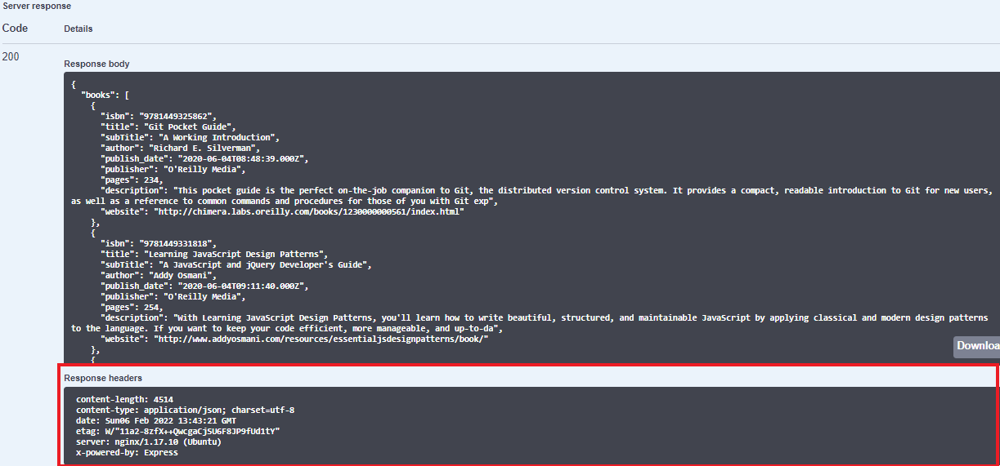
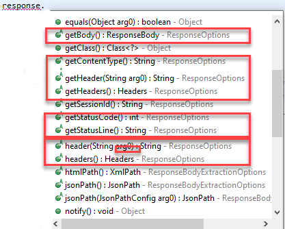
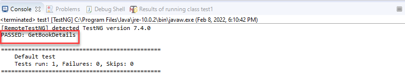
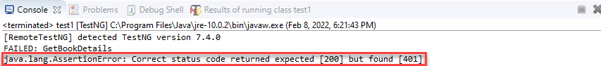

Кожна відповідь HTTP, отримана в результаті запиту HTTP, надісланого клієнтом на сервер, має код статусу. Це значення коду стану повідомляє нам, чи була відповідь HTTP успішною чи ні. Ця стаття є продовженням нашої попередньої статті, в якій ми виконали зразок тестового виклику REST API. У цій статті ми обговоримо, як перевірити стан відповіді HTTP за допомогою REST Assured. Зміст публікації відображає наступний індекс:
-
Перевірте статус відповіді HTTP за допомогою Rest Assured
- Як перевірити код статусу відповіді HTTP
- Перевірка коду статусу помилки HTTP?
- Як перевірити рядок стану відповіді HTTP?
Перевірте статус відповіді HTTP за допомогою Rest Assured
Об’єкт відповіді HTTP зазвичай представляє пакет HTTP (пакет відповіді), надісланий сервером веб-служб у відповідь на запит клієнта. Відповідь HTTP містить:
- Статус.
- Колекція заголовків.
- Тіло.
У нас є детальна стаття про HTTP-відповідь тут.
Отже, коли ми кажемо, що нам потрібно перевірити статус відповіді HTTP, ми з нетерпінням чекаємо на наявність механізму для читання та перевірки всього об’єкта відповіді, включаючи статус, заголовки та тіло. Тому ми перевірятимемо кожен компонент відповіді HTTP окремо. Отже, у цій статті перевірка стану відповіді HTTP розглядатиметься у три частини:
- Перевірка коду статусу відповіді HTTP.
- Як перевірити код статусу помилки
- Перевірка рядка стану відповіді.
Як ми вже знаємо, той самий REST API повертає повідомлення-відповідь у форматі XML або JSON. Цей формат залежить від атрибута Media-Type у запиті HTTP.
Але як тоді клієнт знатиме, яку відповідь він отримає від API? Ну, це керується заголовками відповідей. Заголовок відповіді містить атрибут Content-Type , який повідомляє про тип формату тіла відповіді.
Розглянемо приклад Swagger UI, який ми обговорювали в попередніх статтях. Припустімо, що ми надсилаємо запит GET до Книжкового магазину через наш браузер наступним чином:
java curl -X GET "https://demoqa.com/BookStore/v1/Books" -H "accept: application/json"
Коли наведена вище команда виконується, ми отримуємо відповідь, показану на екрані нижче:

Як видно з наведеного вище знімка екрана, відповідь має статус, заголовки та тіло. Якщо ми перевіримо розділ «Заголовки відповідей» , на екрані вище, він має атрибут типу вмісту, який має значення разом з іншими атрибутами. Перевіривши цей заголовок, клієнт знає, якого типу відповіді (тіло) ми можемо очікувати.
Переходимо до перевірки статусної частини відповіді.
Як перевірити код статусу відповіді HTTP
Коли клієнт запитує певну інформацію від сервера, сервер надсилає клієнту відповідь із кодом стану. Код статусу, який повертає сервер, повідомляє нам, чи був запит успішним чи ні. Якщо запит пройшов успішно, сервер надсилає код статусу в діапазоні 200-299. Якщо запит не був успішним, повертається код статусу, відмінний від діапазону. Ми можемо отримати список кодів стану HTTP разом із їхнім описом на сторінці W3.
Бібліотека Rest Assured надає пакет під назвою "io.restassured.response" , який має інтерфейс відповіді. Інтерфейс відповіді надає методи, які можуть допомогти отримати частини отриманої відповіді. На наступному знімку екрана показано деякі важливі методи інтерфейсу відповіді .

Метод * getStatusCode() використовується для отримання коду статусу відповіді. Цей метод повертає ціле число, а потім ми можемо перевірити його значення. TestNG Assert * використовується для перевірки коду статусу. Тепер розглянемо наведений нижче код:
java import static org.junit.Assert.*; імпорт org.testng.Assert; //використовується для перевірки стану відповіді import org.testng.annotations.Test; import io.restassured.RestAssured; import io.restassured.response.Response; import io.restassured.specification.RequestSpecification;
public class RestAssuredTestResponse { @Test public void GetBookDetails() {
// Вкажіть базову URL-адресу веб-служби RESTful RestAssured.baseURI = "https://demoqa.com/BookStore/v1/Books"; // Отримання RequestSpecification запиту, який буде надіслано на сервер RequestSpecification httpRequest = RestAssured.given();
Response response = httpRequest.get("");
// Get the status code of the request.
//If request is successful, status code will be 200
int statusCode = response.getStatusCode();
// Assert that correct status code is returned.
Assert.assertEquals(statusCode /*actual value*/, 200 /*expected value*/,
"Correct status code returned");
}
}
Наведений нижче рядок коду витягує код статусу з повідомлення:
java int statusCode = response.getStatusCode();
Повернене значення "statusCode" порівнюється з очікуваним значенням, тобто 200. Якщо обидва значення рівні, повертається відповідне повідомлення.
java // Підтвердити, що повернуто правильний код статусу. Assert.assertEquals(statusCode / фактичне значення /, 200 / очікуване значення /, "Повернено правильний код статусу");
Якщо ви запустите наведений вище тест, ви побачите, що тест пройдено, оскільки веб-служба повертає код статусу 200, як показано на зображенні нижче.

Таким чином ми можемо перевірити код статусу відповіді за допомогою методу "getStatusCode()" інтерфейсу відповіді. Зауважте, що оскільки ми вже знали, що код успіху тут дорівнює 200, ми написали відповідний код. Ваш сервер може відповісти на успіх кодом від 200 до 299. Найкраще перевірити це заздалегідь. Тепер перейдемо до обговорення того, як перевірити код статусу, який повертає значення, відмінні від 200, тобто код статусу помилки.
Як перевірити код статусу помилки HTTP?
Наразі ситуація між запитом і відповіддю влаштовує, і ми отримали лише 200 кодів статусу, які вказують на успішні запити. Але це не завжди може бути правдою в реальному світі. Можуть бути такі причини, як сервер не працює, REST API не працює належним чином або самі запити можуть бути проблематичними. Підсумовуючи, ми можемо зіткнутися з такими сценаріями:
- Сервер, на якому розміщено REST API, не працює.
- Некоректний запит клієнта.
- Запитаний клієнтом ресурс не існує.
- Під час обробки запиту на стороні сервера виникає помилка.
Отже, коли виникає будь-який із наведених вище сценаріїв, REST API поверне відповідний код статусу, відмінний від 200. Клієнт, у свою чергу, має перевірити цей код статусу та обробити його відповідно.
Для сервісу ToolsQA Book Store давайте створимо ще один тест із помилковим сценарієм. Тут ми перевіримо код статусу HTTP, який повертає веб-служба книжкового магазину, коли введено недійсний параметр.
Отже, тут ми надаємо параметр для отримання інформації про користувача. Тут ми надаємо неіснуючий userId як параметр. Код виглядає так:
java import static org.junit.Assert.*; імпорт org.testng.Assert; //використовується для перевірки стану відповіді import org.testng.annotations.Test; import io.restassured.RestAssured; import io.restassured.response.Response; import io.restassured.specification.RequestSpecification;
публічний клас RestAssuredTestResponse {
@Test
public void GetPetDetails()
{
// Specify the base URL to the RESTful web service
RestAssured.baseURI = "https://demoqa.com/Account/v1/User/";
// Get the RequestSpecification of the request to be sent to the server
RequestSpecification httpRequest = RestAssured.given();
Response response = httpRequest.get("test");
// Get the status code of the request.
//If request is successful, status code will be 200
int statusCode = response.getStatusCode();
// Assert that correct status code is returned.
Assert.assertEquals(statusCode /*actual value*/, 200 /*expected value*/,
"Correct status code returned");
}
}
Коли ми запускаємо цей тест, він повертає код помилки 401. Нижче ми можемо побачити результат виконання тесту.

Примітка: ми можемо швидко змінити код вище, щоб переконатися, що тест пройдено. Ця зміна показана нижче:
java Assert.assertEquals(statusCode / фактичне значення /, 401 / очікуване значення /, "Повернено правильний код статусу");
Отже, тут ми очікуємо, що повернене значення буде 401 замість 200, отже, тест пройдено. Далі ми перевіримо «рядок стану» .
Як перевірити рядок статусу відповіді?
« Рядок стану» — це перший рядок, який повертається у відповіді HTTP. Рядок стану складається з трьох підрядків:
- Версія протоколу HTTP.
- Код статусу.
- Рядкове значення коду стану.
Наприклад, якщо запит виконано успішно, рядок стану матиме значення «HTTP/1.1 200 OK». Тут перша частина — це протокол HTTP (HTTP/1.1). Далі йде код стану HTTP (200). Третє — повідомлення про статус (OK).
Ми можемо прочитати весь рядок стану за допомогою методу getStatusLine () інтерфейсу відповіді. Наступний код показує демонстрацію.
java @Test public void GetBookDetails() {
// Вкажіть базову URL-адресу веб-служби RESTful RestAssured.baseURI = "https://demoqa.com/BookStore/v1/Books"; // Отримання RequestSpecification запиту, який буде надіслано на сервер RequestSpecification httpRequest = RestAssured.given(); Відповідь response = httpRequest.get("");
// Get the status line from the Response in a variable called statusLine
String statusLine = response.getStatusLine();
Assert.assertEquals(statusLine /*actual value*/, "HTTP/1.1 200 OK"
/*expected value*/, "Correct status code returned");
}
Тут ми виконуємо подібний тест, як і для коду стану. Ми читаємо рядок стану за допомогою методу getStatusLine () у рядкове значення. Потім ми порівнюємо це повернуте значення з «HTTP/1.1 200 OK», щоб перевірити, чи статус успішний.
Примітка. Статтю про листоношу на ту саму тему (Відповідь у Postman) можна знайти на сторінці Response у Postman.
Відеоінструкція з перевірки коду стану доступна на сторінці Verify Status Code у Rest Assured.
Ключові висновки
У цій статті ми обговорили перевірку статусу HTTP у відповіді REST.
- Відповідь, отримана від сервера, складається зі стану, заголовка та тіла.
- Статус відповіді, у свою чергу, містить код стану та рядок стану.
- Бібліотека Rest Assured надає інтерфейс «Відповідь», який надає численні методи отримання полів відповіді.
- Ми можемо прочитати код стану за допомогою методу getStatusCode(). Так само ми можемо прочитати рядок стану за допомогою методу getStatusLine () інтерфейсу відповіді.
- Після прочитання статусу ми можемо перевірити, чи код успішний (200) чи будь-який інший код.